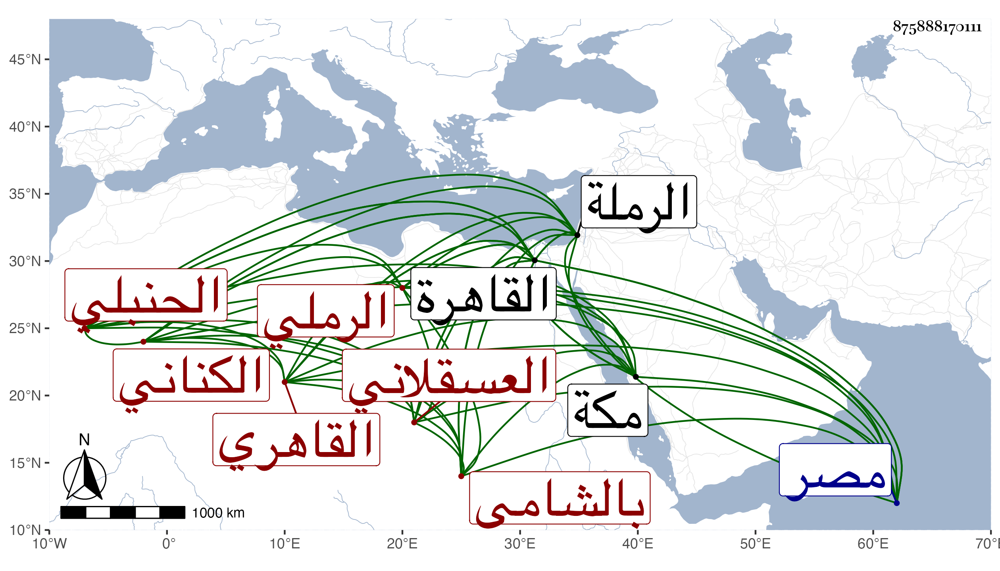

0902Sakhawi.DawLamic.ITO20230111-ara1.EIS1600.875888170111
Biography ID: 875888170111
24
محمد بن أحمد بن علي بن عبد الله بن أبي الفتح بن هاشم بن اسماعيل ابن إبراهيم بن نصر الله بن أحمد الشمس أبو عبد الله بن الشهاب أبي العباس بن العلاء الكناني الرملي العسقلاني القاهري الحنبلي ويعرف أولا بالرملي ثم بالشامي . ولد في صفر سنة أربع وأربعين وسبعمائة بالرملة ، وانتقل وهو صغير إلى مصر فحفظ القرآن والمقنع وحضر دروس القاضي موفق الدين ولازم ابن عمه القاضي ناصر الدين نصر الله بن أحمد بن محمد بن أبي الفتح وخدمه ثم أولاده وسمع على العرضى مسند أحمد الا اليسير منه مشيخة الفخر بن البخاري ورباعيات الترمذي وعلى أبي الحرم القلانسي ذيل مشيخته تخريج العراقي والحربيات الخمسة ما عدا أولها وجزء الآثار وهو الأول من حديث الزهري وعلى العز بن جماعة الادب المفرد للبخاري وعلى الجمال بن نباتة السيرة لابن هشام وعلى المحب الخلاطي سنن الدارقطنى بفوت وسمع من آخرين ، وأجاز له خلق واجتمع بابن شيخ الجبل حين قدم القاهرة وسمع كلامه ، وحدث بالكثير بالقاهرة ومكة وغيرهما سمع منه خلق كشيخنا وابن موسى والأبي وفي الأحياء سنة خمس وتسعين بعض من سمع منه ، وتفرد في الدنيا بسماعه من العرضى ، وناب في القضاء مدة وصار عين النواب وأكبرهم ، وحج وجاور وكان شيخا مفيدا حافظا للمقنع مذاكرا به مع جموده وقصوره ، قال شيخنا : قرأت عليه وأجاز لأولادي . مات في شعبان سنة إحدى وثلاثين وهو في عقود المقريزى وإن الشامي تردد إليه دهرا رحمه الله .
